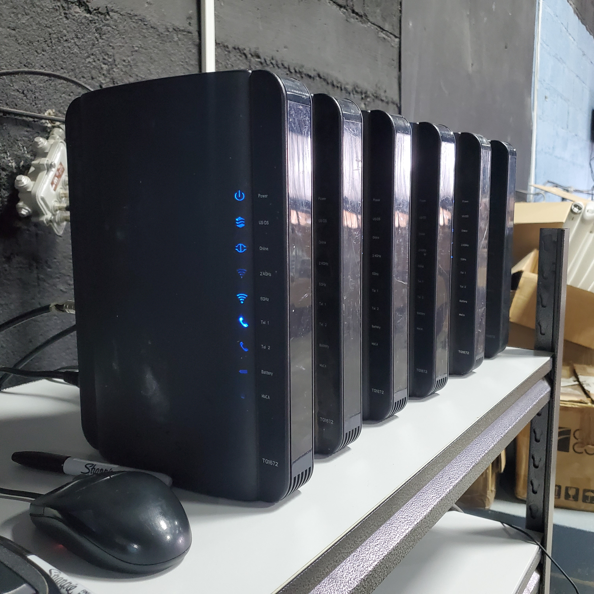
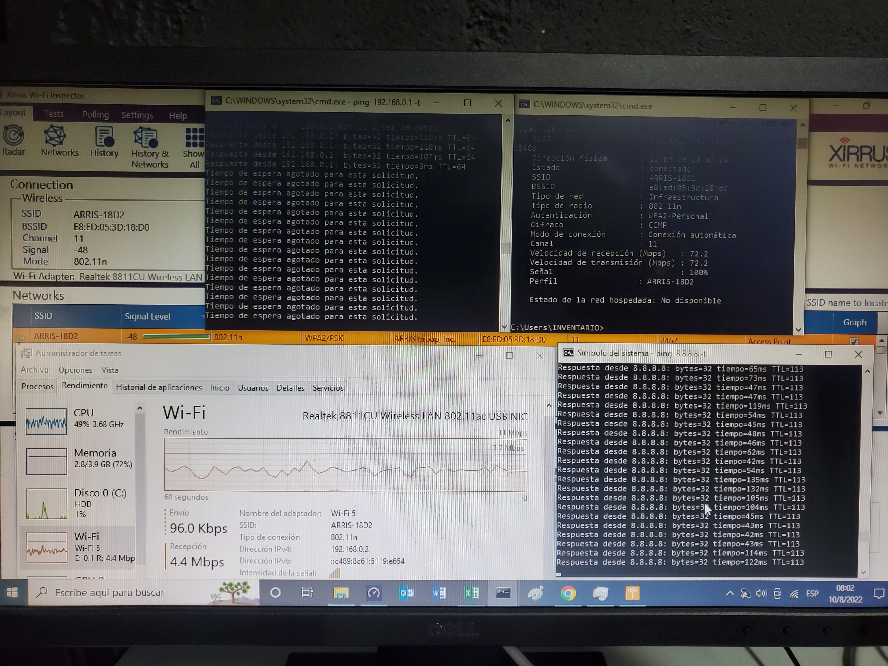
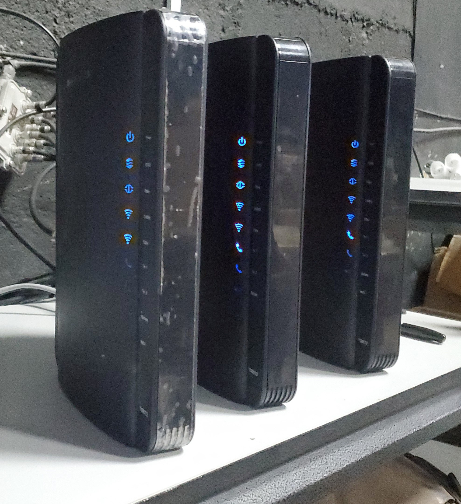

ISG
ISG
ISG
Esto se hace con los equipos recuperados,
se prueban para verificar que funcionen correctamente
o para ver el tipo de daño que poseen, si funciona correctamente
se limpia y va a bodega, donde posteriormente se manda a un nuevo hogar,
pero si no funciona se envía a taller, donde será reparado.


